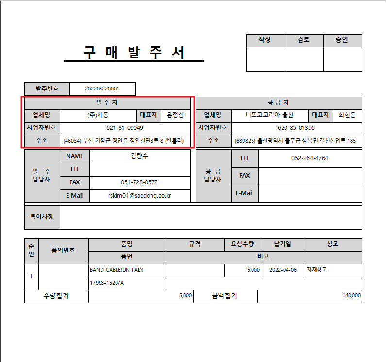
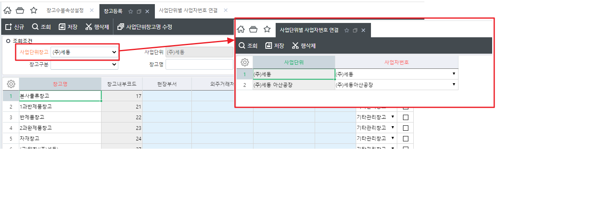

3/29 (세동 - 출력물 수정)
1. 출력물의 발주처 가져오는 로직 수정요청
(1) 납품창고 기준으로 발주처가 조회되도록 수정요청합니다.
- 납품창고에 연결된 사업단위로 [사업단위별 사업자번호 연결]의 사업자 번호 정보 조회
- 사업자등록의 상호, 대표자, 사업자번호, 도로명주소 조회
- 품목별 납품창고가 달라 사업자번호가 다른건이 있으면 사업자번호별로 페이지 넘겨서 출력


sdng_SWPUORDPOPrintQuery
납품창고 -> 사업단위 ->
| 업체명 | MyCompanyName | T.TaxName |
|---|---|---|
| 대표자 | MyOwner | T.Owner |
| 사업자번호 | MyBizNo | T.TaxNo |
| 주소 | MyTaxUnitAddr | T.TaxUnitAddr |
_TPUORDPOItem : WhSeq = _TDAWH:Whseq
_TDAWH : BizUnit = _TDATaxUnit : TaxUnit